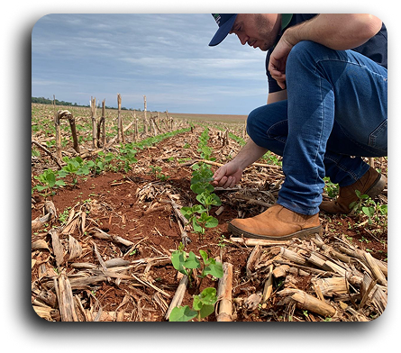

A Niero Planejamentos é uma empresa especializada em soluções
para o solo e planejamento, localizada em São Miguel do Iguaçu,
Paraná. Com um portifólio de serviços que inclui consultoria
e execução de projetos relacionados ao manejo e uso de solo,
a empresa se destaca pela qualidade e eficiência em seus
serviços. Comprometida com a sustentabilidade e o desenvolvimento
de soluções adequadas às necessidades de cada cliente.

🔎 Análise em Campo
Com experiência e atenção aos detalhes, Andrey
realiza a avaliação direta do solo,
identificando necessidades
específicas da lavoura.
Esse acompanhamento técnico garante
decisões assertivas
para o manejo e melhores resultados na produtividade.
Niero Assessoria
Rua Vanio Ghellere n° 25, São Miguel do Iguaçu
CNPJ: 24.365.288/0001-66
CEP: 85877-000